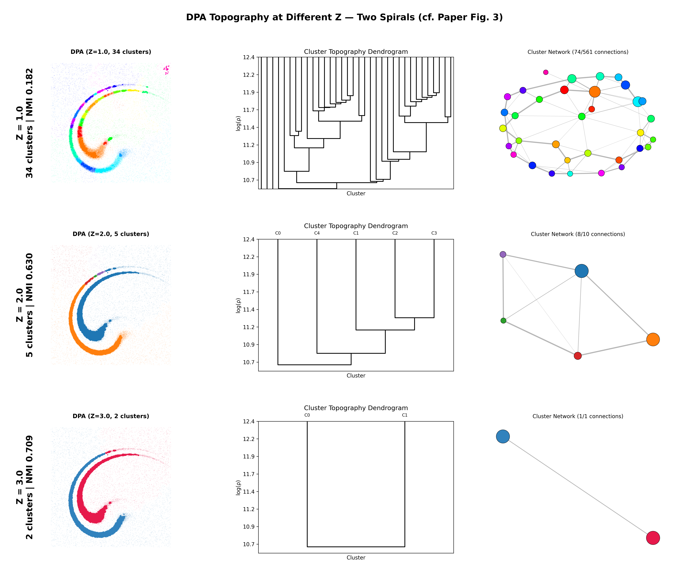
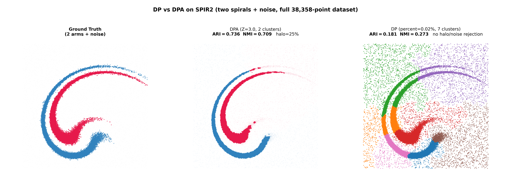

DPA
Density Peak Advanced Clustering
d'Errico, Facco, Laio & Rodriguez (2021)
Information Sciences
Unsupervised Learning Course
Francesca Craievich
Outline
- Motivation & Problem
- Understanding the Method
- TWO-NN (Intrinsic Dimension)
- PAk (Adaptive Density Estimation)
- Heuristics 1-3
- Hyperparameters & Limitations
- Comparison with Other Methods
- Results & Demo
The Problem
Standard Density Peaks (DP) Limitations
DP (Rodriguez & Laio, 2014):
- Manual center selection
- Fixed k-NN density
- No error quantification
- Manual cluster merging
DPA (2021) solves all:
- Automatic center detection
- Adaptive PAk density
- Fisher Information bounds
- Statistical merging (Z-score)
DPA Algorithm Overview
- Estimate intrinsic dimension d using TWO-NN
- Compute adaptive density ρ using PAk
- Find cluster centers (Heuristic 1)
- Find saddle points (Heuristic 2)
- Merge insignificant peaks (Heuristic 3)
- Assign points following density gradient
Key advantage: Only ONE parameter (Z)!
Understanding the Method
1. TWO-NN: Intrinsic Dimension
Estimates the intrinsic dimension d of the data manifold.
Assumes:
- Locally constant density up to the 2nd neighbor
- i.i.d. points
Understanding the Method
2. PAk: The Statistical Model
Key observation: if the density is constant, the vi,l are i.i.d. exponential with rate ρ.
Understanding the Method
2. PAk: Optimal k̂ and Error
Likelihood Ratio Test between two models:
- (1) densities at the point and at its k-th neighbor are the same
- (2) the densities are assumed to be different
Systematic correction: log(ρ) replaced by log(ρ) + α·l — α models the linear density trend
Error from Fisher Information:
εi = √(4(k̂i+2) / ((k̂i-1)·k̂i))
Understanding the Method
3. The Three Heuristics
| Heuristic |
Purpose |
Criterion |
| H1 |
Find cluster centers |
1. δᵢ > rk̂ᵢ
2. ∀ j, gj > gi : i ∉ NNj := {k : rjk < rk̂j}
|
| H2 |
Find saddle points |
1. j = argmink∈c' rik, with rij < rk̂ᵢ
2. i = argmink∈c rjk
|
| H3 |
Merge peaks |
Z-test on peak vs saddle
|
g = log(ρ) - ε (error-adjusted density)
Hyperparameters
The Z Parameter
| Z |
Effect |
| 1.0 |
More clusters (liberal) |
| 2.0 |
Balanced (default) |
| 3.0 |
Fewer clusters (conservative) |
Limitations
Weaknesses
- High dimensions (d > 15):
PAk estimation degrades
- Computation:
O(N × kmax × log N)
- Uniform density:
No natural peaks
Mitigations
- Use lower Z for high-D
- FAISS for fast k-NN
- Check decision graph
SPIR2 - DPA topography

DPA vs DP

Conclusions
- DPA automates what DP required manually
- Single parameter Z with clear statistical meaning
- Error quantification via Fisher Information
- Topographic analysis for cluster interpretation
Thank You!
Questions?
Code: github.com/francescacraievich/Data-Topography-DPA